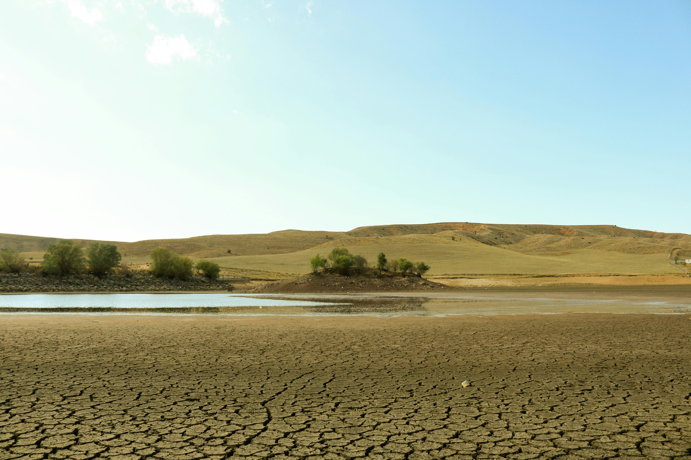
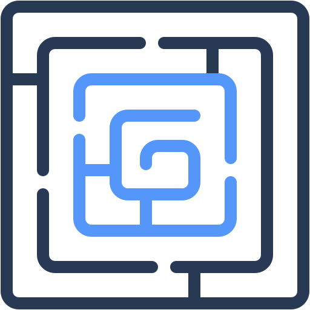
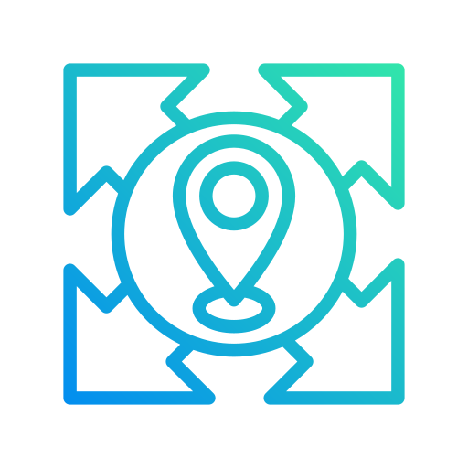
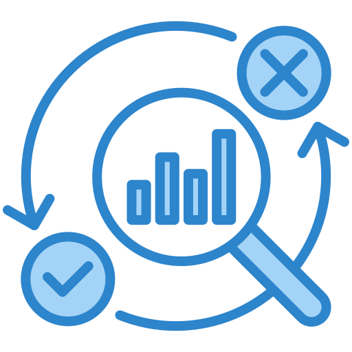
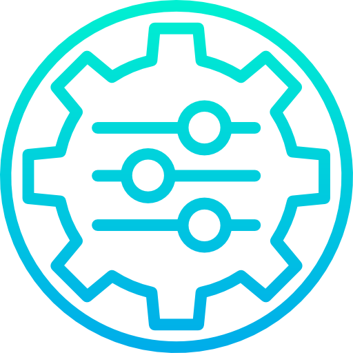
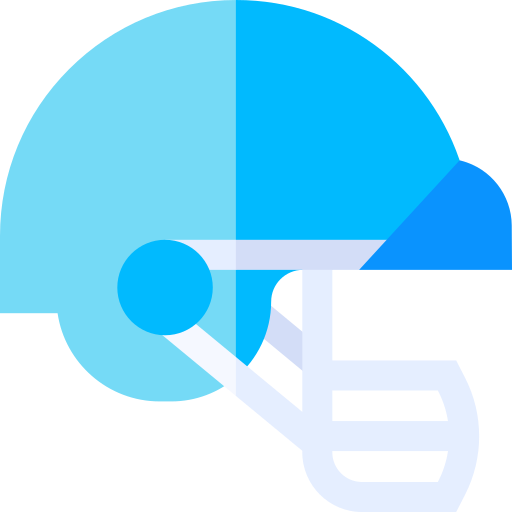
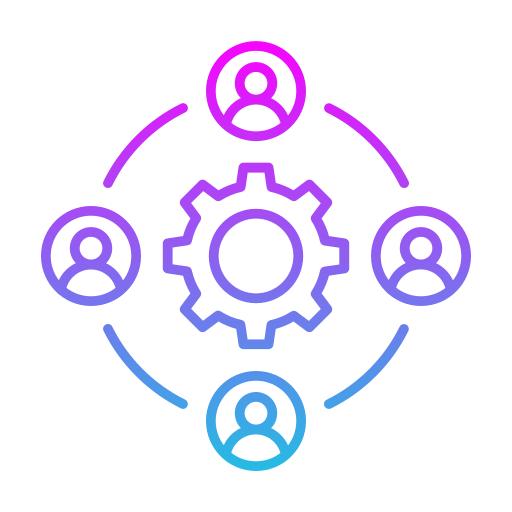
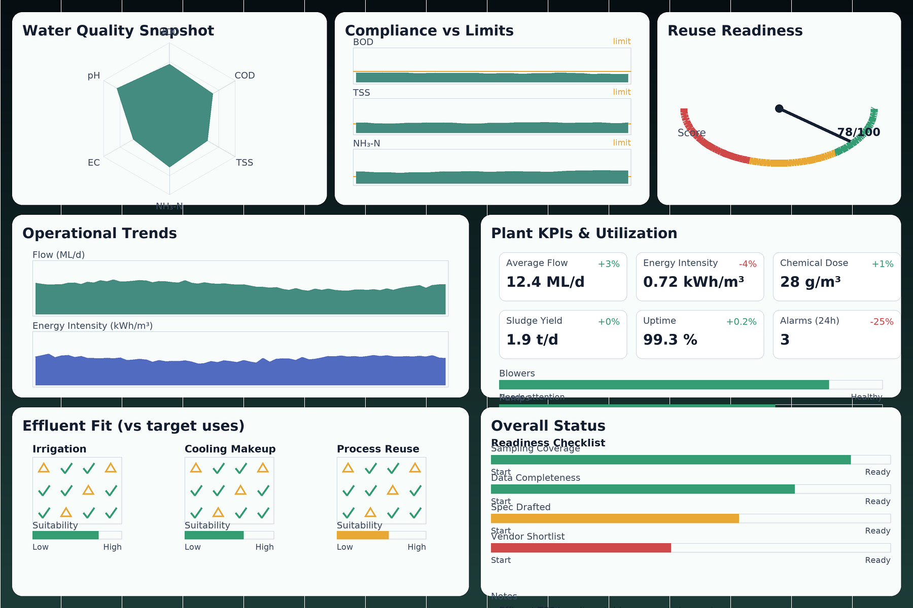

Delivery sequence
Engagement Roadmap
Use when the main task is sequencing intake, diagnostics, supplier comparison, completion checks and follow-up actions across the project journey.
Open engagement roadmap
FlowPlan › Planning & Delivery
From early diagnostics to implementation, FlowPlan helps water, wastewater, and reuse projects move forward with clarity. It translates diagnostic insights into vendor-ready pathways and configured solutions that connect treatment strategies with reuse and recovery goals.
FlowPlan provides a practical roadmap that organises the work into clear service streams and design outputs, from intake and feasibility through pathway selection, solution design, module configuration, vendor alignment, coordination points, and commissioning verification.
FlowPlan delivers planning and delivery support across the full lifecycle of water, wastewater, reuse, and biosolids projects, from the first scoping conversation through to implementation and optimisation. Engagements are organised into four service streams that integrate directly with your project teams, vendors, and operators, ensuring consistent outputs at every phase.

FlowPlan structures every project across six defined phases - from site intake to performance-verified implementation.
Each phase has defined outputs, vendor coordination touchpoints, and performance checkpoints.
Projects may engage at any phase depending on current stage - or follow the full sequence for new-build or complex upgrades.
Site flows, reuse goals, constraints, and decision boundaries are confirmed. Essential context is captured so the plan reflects actual operational needs, not generic assumptions.
Deliverable: A structured problem definition with confirmed flows, constraints, and decision boundaries, ready to carry into diagnostic and feasibility work.


Diagnostic Mapping & Opportunity IdentificationTargeted diagnostics are applied to identify risks, information gaps, and opportunity pathways for reuse, residuals routing, and compliance alignment.
Deliverable: A diagnostic map of site-specific risks, information gaps, and opportunities, linked to the FlowPlan modules and response routes that address them.


Feasibility & Pathway SelectionOptions are compared for technical fit, economics, and operational practicality to define a decision-ready pathway before committing. Trade-offs are made visible so the preferred pathway is technically robust.
Deliverable: A technically robust pathway comparison with visible trade-offs, showing the preferred option is economically justified before commitment.


FlowPlan ConfigurationNeeds are mapped to FlowPlan modules and the integration logic is defined across water, residuals, odor/septicity, and energy, including integration points and dependencies.
Deliverable: A configured module set that is process-engineered as a complete system, with defined integration points across water, residuals, odour/septicity, and energy.


Specification & ReadinessIntegration points, KPIs, exclusions, and performance criteria are defined before vendor engagement, so bids stay comparable and delivery remains practical.
Deliverable: A Terms of Reference and scope package with defined integration points, KPIs, exclusions, and performance criteria, so bids are comparable and delivery has a clear basis from the start.


Implementation & CoordinationDelivery support stays close to protect design intent, from coordination and commissioning checks through to performance verification and optimisation.
Deliverable: Verified delivery against design intent, including commissioning checks, performance review against reuse and residuals KPIs, and a clear basis for optimisation.

Every enquiry is matched to the right engagement phase, whether the priority is early planning, pathway selection, module configuration, or specification and vendor readiness.
Select the phase closest to your current stage. If you are unsure where to begin, select General and we will identify the right starting point.